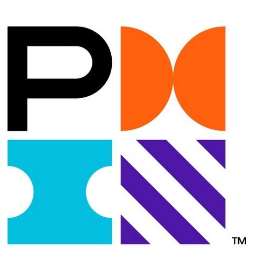

Hi, I'm Katy 👋
I'm passionate about digging into user interaction data to find what's really driving behavior.
My CX experience helps me see the human story behind the clicks.
Google Analytics GA4
View Certificate ↗

Agile Foundations - PMI
View Certificate ↗
AUG 2025
Customer Analytics Intern
GameChanger
3-Month Internship
As the first data hire on the CX team, I built the team's analytical framework from scratch, providing PMs with a new lens into the Voice of the Customer and enabling them with an easier time of incorporating user feedback into their decision-making.
9
Product teams supported
360M+
Monthly mobile interaction event data points analyzed
3
Roadmaps influenced
Python
SQL
Looker
NLP/Sentiment Analysis
User Journey Mapping
Snowflake
Cross-functional Leadership
Data Visualization & Reporting
🎯 Goal:
Create standardized reporting structure for 9 product teams to self-serve CX data
🛠️ Tools:
Looker, Notion, Multi-source data synthesis
📦 Deliverables:
Real-time Looker dashboards + monthly report frameworks for each product team
🌟 Impact:
Enabled PMs to integrate Voice of the User into decision-making for the first time
My Process:
- Conducted stakeholder interviews with each product team's leadership (PM, Engineering, Designer)
- Built and customized Looker KPI dashboards; trained CX specialists for maintenance
- Developed monthly report framework synthesizing insights from Zendesk, GA4, Microsoft Clarity, App Reviews, Reddit, Facebook
Advanced Analytics & Deep Dives
🎯 Goal:
Introduce advanced CX analytics capabilities, filling critical data gaps for PMs
🛠️ Tools:
Python, SQL, Sentiment Analysis (NLP)
📦 Deliverables:
3 ad-hoc analyses per sprint; sentiment analysis of user feedback; A/B test impact assessment
🌟 Impact:
Directly influenced Q2 short-term planning and OKR redefinition for 3 sprint iterations
User Journey & Friction Analysis
🎯 Goal:
Transform CX from reactive ticket-solving to proactive experience optimization
🛠️ Tools:
Python, SQL, Snowflake, Fivetran ETL, User Journey Mapping, Funnel Analysis
📦 Deliverables:
Complete user journey mapping for top 10 ticket themes; end-to-end friction point solutions
🌟 Impact:
Shaped Q3 roadmaps for 3 product teams, prioritizing critical user pain points
Key Methodology:
- Analyzed 360M+ monthly Snowplow events to investigate high-ticket volume issues
- Cross-referenced help center activity with behavioral data to uncover "silent struggles"
- Quantified underreported friction points affecting user experience
AUG 2025
People & Operations Analytics
Amazon (via Extern)
Externship
Analyzed employee feedback to identify workforce risks and operational pain points within Amazon Fulfillment Centers, presenting solutions to company stakeholders.
Python
Sentiment Analysis
Thematic Coding
Stakeholder Presentation
MAY 2025 (ONGOING)
Data Analyst
UCSB Technology Management
Part-Time
Overhauled manual data operations for the undergraduate division, building automated systems and data reporting that improved efficiency and student satisfaction.
15%
YoY enrollment increase
100%
Process automation
Python
PowerBI
Database Design
Marketing Segmentation
Operations Optimization
Phase 1: Database Overhaul
- Designed and created a relational database that stores student information and progress
- Migrated data from Google Spreadsheet into the database
- Set up automation triggers to update students about administrative status and their academic progress
- Segmented students based on demographics, enrollment trends, etc.
- Created targeted email marketing strategies, increasing student engagement by 15% YoY
- Set up PowerBI dashboards for department stakeholders (dean, finance, administrators)
- (ongoing) Conduct enrollment forecasting and faculty demand analysis
- (ongoing) Analyze student engagement sentiment and enrollment seasonal trends to recommend course offering strategies
JAN 2024 (ONGOING)
Data Journalist
Daily Nexus
Freelance
Creating data-driven stories and visualizations for campus publication.
Python
Data Visualization
Storytelling
API
Webscrapping